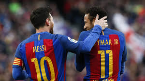
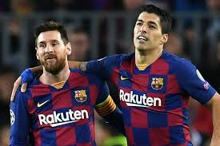

Messi y Neymar
Lionel Messi y Neymar da Silva Santos Júnior formaron una gran amistad en el FC Barcelona, donde jugaron 161 partidos como dupla de ataque y se asistieron en 56 goles. Luego de casi cuatro años, La Pulga y Ney volverán a jugar juntos, esta vez en el Paris Saint Germain. El brasileño le dio la bienvenida a Messi al PSG desde su cuenta de Instagram, donde publicó un video festejando un gol, en la época que formaban tridente ofensivo junto a Luis Suárez. "Back Together" escribió Neymar en una story de IG junto al emoji de un fuego y dos corazones, arrobando la cuenta del crack rosarino.
Lionel Messi y Luis Suárez
Dos de los mejores jugadores de fútbol del mundo y que actualmente tienen una gran amistad son el argentino Lionel Messi y el delantero uruguayo Luis Suárez, quienes además de haber integrado el equipo del Barcelona (España) han construido lazos amicales que trasciende fronteras y hasta el mismo fútbol.
Han sido innumerables las veces que ambos se han enfrentado en una cancha de fútbol defendiendo los colores de sus respectivas selecciones, pero pese a ello se han convertido en compañeros y confidentes.